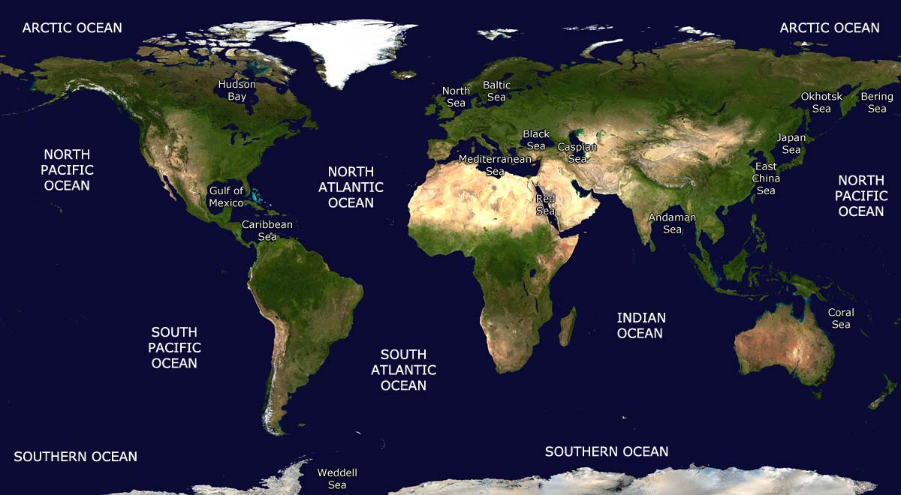
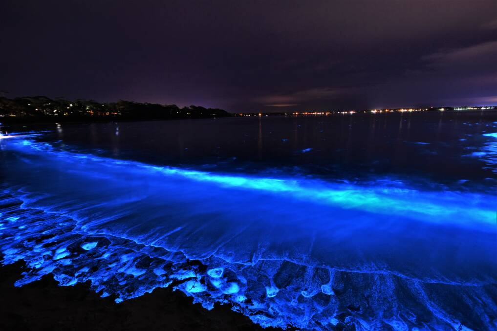

Time to Explore
Below we're going to take a look into some interesting facts scientist have discovered about the ocean.
Did you Know?
Over 70% of the earth surface is covered in water, and those who explore the mysteries of these waters are called "oceanaunt." Today you become one of these explorers, and while many may be familiar with the phrase "The Seven Seas" it's really impossible to make any division as its all one vast body.
It Glows!
Many sea plants and animals are bioluminescent, which means they produce light chemically within their bodies. This is actually for serveral reasons: fending off predators, luring prey, and attracting mates. Usually this charactistic is seen in marine animals where this is considered the only source of light. With the exception of the platypus.
Meet the Neighbors

Julia was recorded on March 1, 1999 by the U.S NOAA. Again, NOAA claims the source to be most likely a large iceberg that had run aground off Anartica. The sound was loud enough to be heard over the entire Equatorial Pacific Ocean autonomous hydrophone array with it lasting for 2 minutes and 43 seconds. Despite this, NOAA was unable to pin-point where the sound was coming from only narrowing it to between Bransfield Straits and Cape Afare. There are many who believe this to be the call of an undiscovered species, as humanity has still yet to discover much of our oceans. For now, however, these sounds remain a mystery and scientist can only guess as to what the origin is.
NOAA Information

From the NOAA Offical Page, "NOAA is an agency that enriches life through science. Our reach goes from the surface of the sun to the depths of the ocean floor as we work to keep the public informed of the changing environment around them."
NOAA Hydrophone Information

According to Britannica, "Sonar, (from “sound navigation ranging”), is a technique for detecting and determining the distance and direction of underwater objects by acoustic means."
AboutEXTRA EXTRA!!

Scientist have only explored 5% of the ocean; meaning there's so much more to discover! Together, let's dive deeper into some more interesting facts about the waters and the creatures living in them. On our Extra page you'll find fun facts about the oceans strangest little creatures, and how these waters can be dangerous.
Extra